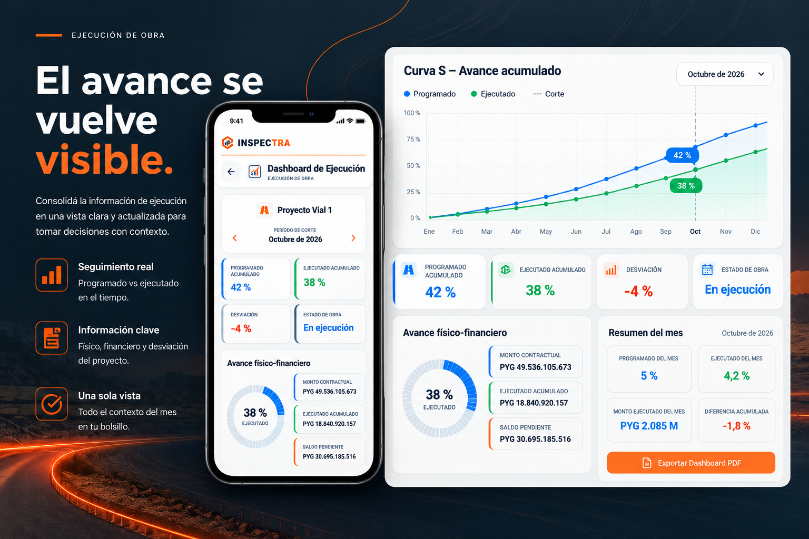

INSPECCIONA
Registrá evidencia desde la cámara con ubicación, fecha, hora y sello técnico configurable.
- Coordenadas y contexto
- Antes y Después
- Navegación vial cuando corresponde
Plataforma de ingeniería en campo
Evidencia técnica, control de ejecución e información clara para que cada decisión de obra conserve su contexto.
INSPECCIONA. REGISTRA. AVANZA.
Una lectura técnica desde el terreno hasta la oficina.
Una plataforma, una lectura clara
INSPECTRA reúne evidencia fotográfica, ubicación, ejecución e informes profesionales en una experiencia pensada para equipos de ingeniería vial y civil.
Método INSPECTRA
Una secuencia técnica clara para registrar información que sirva cuando realmente hace falta.
Registrá evidencia desde la cámara con ubicación, fecha, hora y sello técnico configurable.
Organizá actividades, indicadores, evidencias y avances conservando los datos técnicos de cada registro.
Transformá el registro en seguimiento mediante planillas, gráficos, dashboards e informes configurables.
Ecosistema INSPECTRA
Desde la evidencia de campo hasta el seguimiento de ejecución y los informes profesionales, la información conserva su trazabilidad técnica.
Ingeniería vial
Inspección y registro fotográfico, coordenadas, eje importado mediante KML/KMZ, progresivas PK, actividades, indicadores, ejecución, planillas, curvas S, dashboards e informes.
Las progresivas luminosas de la imagen son una representación publicitaria conceptual; no describen realidad aumentada.Ingeniería civil
Inspección de edificaciones y estructuras, evidencia georreferenciada, actividades, indicadores, Antes y Después, ejecución por sectores, dashboards, curvas S e informes técnicos.
Los proyectos civiles se organizan por sectores identificados, sin requerir progresivas PK.Ejecución de obra
Consolidá ítems contractuales, cantidades, registros por fecha, estados y planillas desde una lectura técnica diseñada para seguimiento mensual.

Informes profesionales
Documentos configurables para compartir una lectura técnica ordenada de cada proyecto.
Fotografías, ubicación y datos configurados para una lectura técnica ordenada.
Resumen de indicadores y avance para acompañar la gestión del proyecto.
Exportaciones disponibles en PDF, Word y Excel según la configuración elegida.
Diseñado para el trabajo real
El dato técnico se conserva junto a su evidencia y contexto.
Visualizaciones pensadas para seguimiento y decisiones oportunas.
Canales de distribución disponibles según el entorno autorizado.
Planes INSPECTRA
La disponibilidad, prueba y facturación dependen del canal de distribución autorizado.
Básico
Para comenzar a registrar y organizar trabajo de campo.
INSPECTRA Pro
Herramientas avanzadas para control técnico integral.
Empresas
Licencias por técnico para equipos de trabajo y contratos empresariales.
Prueba Pro: 7 días, según disponibilidad y condiciones del canal. Las licencias directas no se transfieren automáticamente a Google Play ni App Store.
Canales oficiales
Los enlaces se activarán únicamente cuando correspondan a una versión pública aprobada.